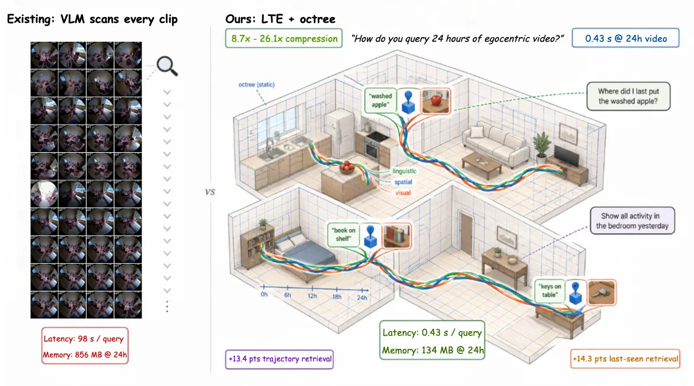
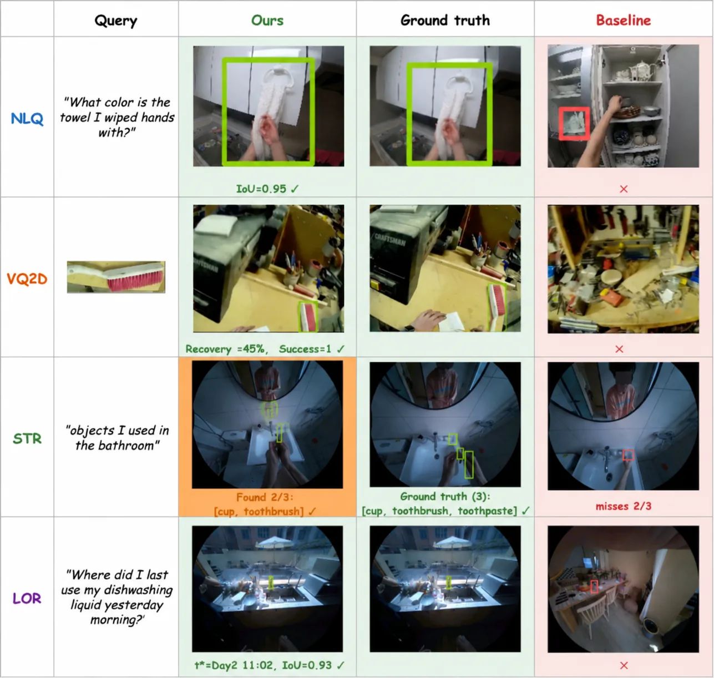
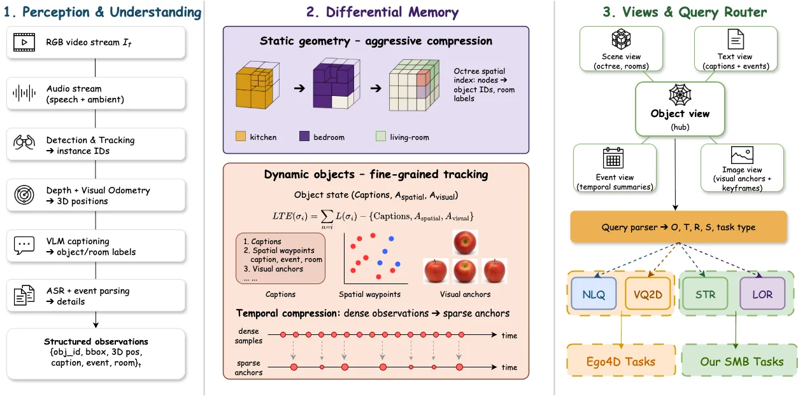

语言轨迹编码：为具身智能体实现高效的长时空间记忆Linguistic Trajectory Encoding for Efficient Long-Horizon Spatial Memory in Embodied Agents
A 级：将空间锚点与动态对象语义结合到长时记忆，提供明确 benchmark、压缩比和检索延迟证据。
一句话工作总结
它把几何轨迹、对象身份和语言状态转成可查询记忆，是从 3D 表征通向空间推理/具身决策的桥接工作。
半海报（待补全）
当前记录尚未达到完整海报质量门槛，暂不把摘要或评分理由冒充方法/实验结论。
待补字段：研究上下文.network（至少 2 条实质条目）。下一次任务需从论文全文或官方 HTML 提取证据后再发布。
摘要
LTE 用自然语言描述、稀疏空间锚点和视觉锚点混合压缩动态物体轨迹，并构建 Spatial Memory Benchmark 评估语义轨迹检索与长时物体检索。官方 HTML 报告 SMB 上 STR/LOR 为 45.3%/48.7%，并在 24 小时视频上实现 26.1× 压缩和 0.43 s/query。
Embodied agents performing long-horizon tasks require a memory representation in which the state transitions of dynamic objects remain queryable in natural language across hours-to-days observation horizons. Existing systems either drop fine-grained motion (clip-level video-language embeddings), keep it only as raw coordinates (geometric SLAM), or organise it around immediate task context (agent working memories). None of them gives the agent a per-object timeline whose state transitions are themselves queryable in language. Our key contribution is \textbf{Linguistic Trajectory Encoding} (LTE), which compresses dynamic object motion histories via a hybrid representation combining natural language descriptions, sparse spatial anchors, and visual anchors. LTE adapts compression to motion complexity by anchoring periods without reliable observations to the last seen location, while representing motion with geometric waypoints and linguistic descriptions to preserve accuracy. To evaluate these capabilities across extended time horizons, we construct the \textbf{Spatial Memory Benchmark} (SMB) from EgoLife multi-day recordings, targeting capabilities absent in existing benchmarks: semantic trajectory retrieval and long-horizon object retrieval. On SMB, the LTE-based system achieves $45.3\%$ success in semantic trajectory retrieval and $48.7\%$ in long-horizon object retrieval, outperforming structured-memory and VLM baselines (best prior: $31.9\%$ and $34.4\%$). LTE achieves trajectory compression by factors of $8.7\times$ to $26.1\times$ with sub-second query latency on $24$\,h video. On Ego4D natural-language queries, the system reaches $28.75\%$ / $55.10\%$ R@1/R@5, $+15.80$ / $+31.30$ pts over EgoVLPv2.
图表/页面预览
{kind=link}

{kind=link}

{kind=link}
